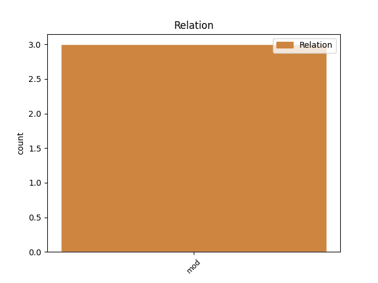
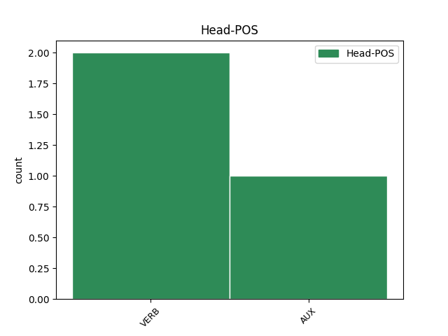
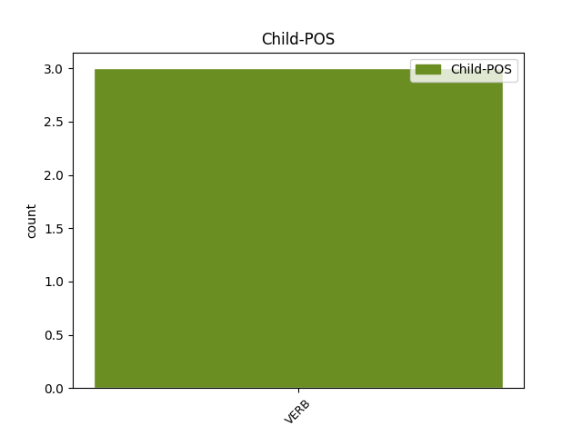

Distribution of features within this leaf



Agreement Rules sorted by frequency.
- When the dependent token is the modifer(mod) of the head token, and the head token is AUX and the dependent token is VERB.
1 Ní _ _ _ _ 0 _ _ _
2 raibh _ _ _ _ 0 _ _ _
3 áit _ _ _ _ 0 _ _ _
4 suí _ _ _ _ 0 _ _ _
5 ag _ _ _ _ 0 _ _ _
6 a _ _ _ _ 0 _ _ _
7 leath _ _ _ _ 0 _ _ _
8 , _ _ _ _ 0 _ _ _
9 ach _ _ _ _ 0 _ _ _
10 ba is AUX Cop PronType=Rel|Tense=Past|VerbForm=Cop 0 _ _ _
11 bheag _ _ _ _ 0 _ _ _
12 a _ _ _ _ 0 _ _ _
13 ghoill _ _ _ _ 0 _ _ _
14 sin _ _ _ _ 0 _ _ _
15 orthu _ _ _ _ 0 _ _ _
16 , _ _ _ _ 0 _ _ _
17 agus _ _ _ _ 0 _ _ _
18 go _ _ _ _ 0 _ _ _
19 leor _ _ _ _ 0 _ _ _
20 de _ _ _ _ 0 _ _ _
21 na _ _ _ _ 0 _ _ _
22 cailíní _ _ _ _ 0 _ _ _
23 bhí bí VERB PastInd Form=Len|Mood=Ind|Tense=Past 10 mod _ _
24 siad _ _ _ _ 0 _ _ _
25 ina _ _ _ _ 0 _ _ _
26 suí _ _ _ _ 0 _ _ _
27 ar _ _ _ _ 0 _ _ _
28 ghlúine _ _ _ _ 0 _ _ _
29 na _ _ _ _ 0 _ _ _
30 mbuachaillí _ _ _ _ 0 _ _ _
31 thart _ _ _ _ 0 _ _ _
32 le _ _ _ _ 0 _ _ _
33 balla _ _ _ _ 0 _ _ _
34 . _ _ _ _ 0 _ _ _
1 Chuaigh téigh VERB VTI Form=Len|Mood=Ind|Tense=Past 0 _ _ _
2 sé _ _ _ _ 0 _ _ _
3 i _ _ _ _ 0 _ _ _
4 gcomhairle _ _ _ _ 0 _ _ _
5 le _ _ _ _ 0 _ _ _
6 saineolaithe _ _ _ _ 0 _ _ _
7 dlí _ _ _ _ 0 _ _ _
8 agus _ _ _ _ 0 _ _ _
9 leighis _ _ _ _ 0 _ _ _
10 fad _ _ _ _ 0 _ _ _
11 a _ _ _ _ 0 _ _ _
12 bhí bí VERB PastInd Form=Len|Mood=Ind|Tense=Past 1 mod _ _
13 Fianna _ _ _ _ 0 _ _ _
14 Fáil _ _ _ _ 0 _ _ _
15 ar _ _ _ _ 0 _ _ _
16 thaobh _ _ _ _ 0 _ _ _
17 an _ _ _ _ 0 _ _ _
18 fhreasúra _ _ _ _ 0 _ _ _
19 roimh _ _ _ _ 0 _ _ _
20 olltoghchán _ _ _ _ 0 _ _ _
21 1997 _ _ _ _ 0 _ _ _
22 . _ _ _ _ 0 _ _ _
Disagree Examples:
1 (6) _ _ _ _ 0 _ _ _
2 Ní _ _ _ _ 0 _ _ _
3 bheidh _ _ _ _ 0 _ _ _
4 aon _ _ _ _ 0 _ _ _
5 táillí _ _ _ _ 0 _ _ _
6 ionfhálta _ _ _ _ 0 _ _ _
7 san _ _ _ _ 0 _ _ _
8 Oifig _ _ _ _ 0 _ _ _
9 maidir _ _ _ _ 0 _ _ _
10 le _ _ _ _ 0 _ _ _
11 haon _ _ _ _ 0 _ _ _
12 phaitinn _ _ _ _ 0 _ _ _
13 den _ _ _ _ 0 _ _ _
14 tsórt _ _ _ _ 0 _ _ _
15 a _ _ _ _ 0 _ _ _
16 luaidhtear _ _ _ _ 0 _ _ _
17 san _ _ _ _ 0 _ _ _
18 alt _ _ _ _ 0 _ _ _
19 so _ _ _ _ 0 _ _ _
20 mara _ _ _ _ 0 _ _ _
21 ndintar _ _ _ _ 0 _ _ _
22 ná _ _ _ _ 0 _ _ _
23 go _ _ _ _ 0 _ _ _
24 dtí _ _ _ _ 0 _ _ _
25 go _ _ _ _ 0 _ _ _
26 ndéanfar _ _ _ _ 0 _ _ _
27 cóipeanna _ _ _ _ 0 _ _ _
28 deimhnithe _ _ _ _ 0 _ _ _
29 de _ _ _ _ 0 _ _ _
30 sna _ _ _ _ 0 _ _ _
31 hiontrála _ _ _ _ 0 _ _ _
32 sa _ _ _ _ 0 _ _ _
33 chlár _ _ _ _ 0 _ _ _
34 Bhriotáineach _ _ _ _ 0 _ _ _
35 a _ _ _ _ 0 _ _ _
36 bhaineann _ _ _ _ 0 _ _ _
37 leis _ _ _ _ 0 _ _ _
38 an _ _ _ _ 0 _ _ _
39 bpaitinn _ _ _ _ 0 _ _ _
40 do _ _ _ _ 0 _ _ _
41 thabhairt _ _ _ _ 0 _ _ _
42 don _ _ _ _ 0 _ _ _
43 cheannasaí _ _ _ _ 0 _ _ _
44 chun _ _ _ _ 0 _ _ _
45 a _ _ _ _ 0 _ _ _
46 gcláruithe _ _ _ _ 0 _ _ _
47 agus _ _ _ _ 0 _ _ _
48 cóip _ _ _ _ 0 _ _ _
49 den _ _ _ _ 0 _ _ _
50 áireamhacht _ _ _ _ 0 _ _ _
51 iomláin _ _ _ _ 0 _ _ _
52 ar _ _ _ _ 0 _ _ _
53 ar _ _ _ _ 0 _ _ _
54 deonadh _ _ _ _ 0 _ _ _
55 an _ _ _ _ 0 _ _ _
56 phaitinn _ _ _ _ 0 _ _ _
57 Bhriotáineach _ _ _ _ 0 _ _ _
58 do _ _ _ _ 0 _ _ _
59 lóisteáil _ _ _ _ 0 _ _ _
60 leis _ _ _ _ 0 _ _ _
61 an _ _ _ _ 0 _ _ _
62 gceannasaí _ _ _ _ 0 _ _ _
63 ach _ _ _ _ 0 _ _ _
64 má _ _ _ _ 0 _ _ _
65 dintar déan VERB VTI Mood=Ind|Tense=Pres|Voice=Auto 0 _ _ _
66 teip _ _ _ _ 0 _ _ _
67 i _ _ _ _ 0 _ _ _
68 lóisteáil _ _ _ _ 0 _ _ _
69 na _ _ _ _ 0 _ _ _
70 gcóipeanna _ _ _ _ 0 _ _ _
71 san _ _ _ _ 0 _ _ _
72 ní _ _ _ _ 0 _ _ _
73 shaorfidh shaor VERB VTI Mood=Ind|Tense=Fut 65 mod _ _
74 an _ _ _ _ 0 _ _ _
75 teip _ _ _ _ 0 _ _ _
76 sin _ _ _ _ 0 _ _ _
77 an _ _ _ _ 0 _ _ _
78 t-iarratasóir _ _ _ _ 0 _ _ _
79 o _ _ _ _ 0 _ _ _
80 oblagáid _ _ _ _ 0 _ _ _
81 íoctha _ _ _ _ 0 _ _ _
82 aon _ _ _ _ 0 _ _ _
83 táillí _ _ _ _ 0 _ _ _
84 ná _ _ _ _ 0 _ _ _
85 o _ _ _ _ 0 _ _ _
86 n-a _ _ _ _ 0 _ _ _
87 dtiocfadh _ _ _ _ 0 _ _ _
88 de _ _ _ _ 0 _ _ _
89 dheascaibh _ _ _ _ 0 _ _ _
90 a _ _ _ _ 0 _ _ _
91 neamh-íoctha _ _ _ _ 0 _ _ _
92 . _ _ _ _ 0 _ _ _